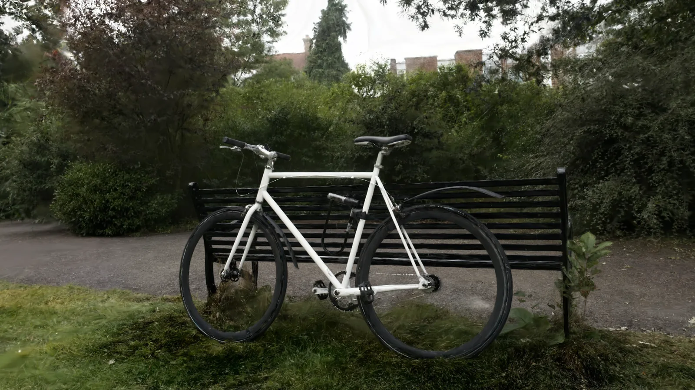

Gaussian splatting,
native to Godot.
Import, render, and tune splat-based scenes right inside the editor and at runtime. Bring captured reality into a real, open-source game engine.

A splatting pipeline that lives in the engine.
No round-trips to a separate viewer. Import a capture, place it in a scene, and export it with a godotGS export template — with the tools you already use.
Import PLY and SPZ captures
Import supported .ply and .spz splat captures as native Godot resources: each becomes a GaussianSplatAsset. Drag it into the 3D viewport and the editor creates a GaussianSplatNode3D for it.
Stream millions of splats
Streaming, distance-based LOD and per-chunk quantization are built for multi-million-splat scenes. At that density frame rates are not yet interactive — see Performance for the measured numbers.
Tune in the editor
Quality preset, LOD bias, opacity and color grading are Inspector properties on GaussianSplatNode3D. An optional bake writes the grade into the node's loaded splat colors, not the saved asset.
Evidence-first
GPU regression tests, runtime validation and reproducible benchmarks. We publish the harness and a dated benchmark snapshot, including the slow numbers.
Stress reference, not a typical scene: dense_resident_2m, 4.9M visible splats across 196 instances of synthetic fixtures (not a real capture), captured 2026-07-19 on an optimized Windows build (RTX 3090 / Ryzen 7 5800X). This is a slow number, and it is the one we publish — the resident path does not reach interactive frame rates at this density. Alpha software — nightly-first, no named stable release yet. We publish the harness, not just the highlight.
Prefer to build the editor yourself?
The quickest route is a nightly editor on Windows or Linux, and Your First Splat walks through it. Build the editor yourself on macOS, for full speed on Linux, or for a custom build: from a clone of the repository, build on Linux, Windows, or macOS, open the sample project in the editor and press Play to see a small synthetic sample (1,024 splats). macOS needs a MoltenVK-capable Vulkan SDK.
scons platform=linuxbsd target=editor -j$(nproc)
# 2 — open the sample project in the editor
./bin/godot.linuxbsd.editor.x86_64 -e \
--path tests/examples/godot/test_project
# 3 — press Play (F5) to run the sample scene
Put captured reality in your game.
Open-source, MIT-licensed, and built in the open. Grab a nightly or build from source today.